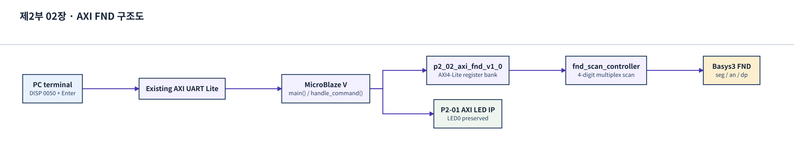
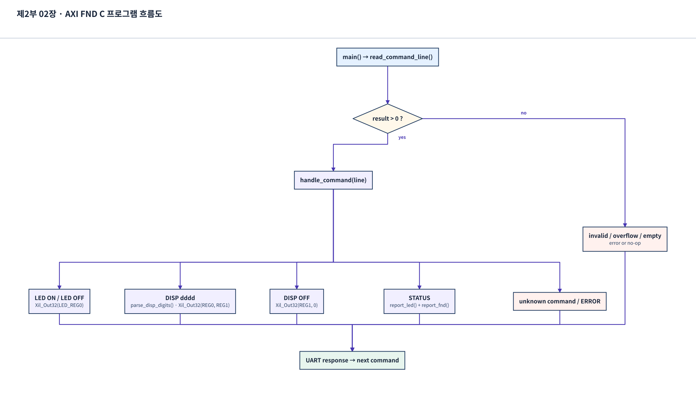

00이 장의 목표
MicroBlaze V가 UART 문자열 명령을 받아 표시값을 저장하고, 독립 RTL 코어가 4자리를 스캔하는 실습.
- Basys3
- MicroBlaze V
- Vivado / Vitis 2024.2
- 4-digit FND
- 신규 사용자 IP
01완성 후 동작
PC 터미널에서 DISP 0050을 입력하면 FND 네 자리가 0050을 표시합니다. 앞자리 0도 생략하지 않습니다. DISP OFF는 FND만 소등하고 LED0은 유지합니다.
| 명령 + Enter | AXI 레지스터 변경 | FND 결과 | UART 예상 응답 |
|---|---|---|---|
DISP 1234 | REG0 ← 0x1234, REG1 bit0 ← 1 | 1234 | OK DISP=1234 ... |
DISP 0050 | REG0 ← 0x0050, REG1 bit0 ← 1 | 0050 | OK DISP=0050 ... |
DISP OFF | REG1 bit0 ← 0; REG0 유지 | 네 자리 모두 소등 | OK DISP=OFF VALUE=0050 ... |
STATUS | 기존 LED IP와 신규 FND IP 읽기 | 변화 없음 | STATUS LED=... / STATUS DISP=... |
LED ON / LED OFF | 기존 P2-01 LED IP 제어 | FND 값 유지 | 기존 LED 상태 응답 |
표의 UART 메시지는 기대값입니다. 115200 baud, 8N1, 대문자·공백 정확히 일치, CR/LF/CRLF 허용.
02CPU → AXI → FND 스캔 구조

CPU는 표시 숫자를 설정하고, RTL은 각 자리의 켜짐 시간을 반복 제어합니다. MicroBlaze V가 자리마다 일일이 켜고 끄는 방식이 아닙니다. 따라서 CPU가 UART 입력을 기다리는 동안에도 FND 스캔은 계속됩니다.
03FND 4자리·Active-Low·BCD
Basys3 내장 7-Segment(세븐 세그먼트, 숫자 표시 장치)의 seg[6:0]은 a~g 획의 제어선, an[3:0]은 자릿수 선택선입니다. 0일 때 활성(Active-Low)이며, an[0]은 오른쪽 끝, an[3]은 왼쪽 끝입니다.
| 표시값 | 자리3 / AN3 | 자리2 / AN2 | 자리1 / AN1 | 자리0 / AN0 |
|---|---|---|---|---|
1234 | 1 | 2 | 3 | 4 |
0050 | 0 | 0 | 5 | 0 |
DISP OFF | OFF | OFF | OFF | OFF |
16'h0050은 네 자리 BCD 값입니다. 16진수 0x0050의 네 니블이 각각 십진 숫자 0·0·5·0에 대응합니다. 0050을 정수 50으로 바꾸어 앞자리 0을 버리지 않습니다.
기본 FND_SCAN_TICKS=100000에서 AXI 클록이 실제 100 MHz인 경우에 한해 자릿수 선택 간격은 1 ms, 각 자리는 초당 250회 재점등됩니다. AXI 클록이 다르면 실제 주파수를 확인한 후 이 파라미터를 변경합니다.
04AXI 레지스터와 CPU 메모리 맵
| Offset | 기호 | 쓰기 | 읽기 / 리셋 |
|---|---|---|---|
0x00 | FND_VALUE_REG / REG0 | 하위 16비트: BCD d3,d2,d1,d0 | 입력한 BCD / 0x00000000 |
0x04 | FND_CTRL_REG / REG1 | bit0: 1=표시, 0=소등 | 현재 enable / 0 |
0x08 | REG2 (예약) | 쓰기 SLVERR | 0 읽기 |
0x0C | REG3 (예약) | 쓰기 SLVERR | 0 읽기 |
REG0/REG1은 정상 주소에 대해 WSTRB(바이트 쓰기 선택)를 따릅니다. 잘못된 주소는 SLVERR 응답을 돌려줍니다. Base Address는 예시를 복사하지 않고 신규 Address Editor 및 BSP xparameters.h에서 확인합니다.
DISP 0050 → Xil_Out32(FND_IP_BASEADDR + 0x00, 0x00000050) → Xil_Out32(FND_IP_BASEADDR + 0x04, 0x00000001) → fnd_scan_controller : AN3=0, AN2=0, AN1=5, AN0=0
05선행 조건 및 유지·변경 파일
| 구분 | 유지 | 추가·변경 |
|---|---|---|
| 프로젝트 | 기본 SoC 기존 soc11_user_top; 제2부 01장 soc_ip_design_01 | 별도 복제 soc_ip_design_02 |
| 기존 기능 | MicroBlaze V, BRAM, UART, GPIO, Timer, INTC, P2-01 LED IP | 신규 FND AXI IP + 재사용 RTL |
| 보드 신호 | clk, btnC, sw, led, RsRx, RsTx | seg[6:0], an[3:0], dp |
| Vitis | P2-01 문자열 명령 체계 | FND 명령 처리 코드 추가 |
| 기록 | P2-01 테스트·기존 자료 | P2-02 장별 테스트·주소 기록 |
기능 보존 구분: 기존 UART·Timer·INTC 하드웨어 IP가 복제 프로젝트에 남아 있어도, 기본 SoC의 LED14 UART 표시나 LED15 Timer heartbeat 같은 C 애플리케이션 동작이 새 P2-02 코드에서 자동으로 유지되는 것은 아닙니다. 본 장은 P2-01 LED0 기능을 계승합니다.
06선행 프로젝트 복제
목적
확인이 끝난 P2-01을 보존하고 P2-02에서만 변경한다.
메뉴·위치
Vivado → File → Project → Save As...
조작
soc_ip_design_01.xpr에서 새 폴더 $HOME/soc/hw/soc_ip_design_02/ 및 새 이름 soc_ip_design_02 지정. 프로젝트 소스가 새 폴더로 복사되는지 확인한다.
정상 확인
새 XPR·BD·Top이 모두 신규 프로젝트 안에 존재하고, 01장 XPR은 변경되지 않는다.
동작 원리
실습이 누적되더라도 이전 장의 기준 프로젝트를 보호한다.
오류 확인
XPR이 soc_ip_design_01 폴더를 참조하면 소스 복제를 완료하기 전 작업 중단.
# 신규 프로젝트 XPR이 원본을 직접 참조하는지 확인
XPR="$HOME/soc/hw/soc_ip_design_02/soc_ip_design_02.xpr"
grep -nE 'soc_ip_design_01|soc11_user_top|soc11_integration.bd|basys3_soc11_top.v' "$XPR"grep -nE: 경로 문자열을 검색하고 해당 줄 번호를 표시한다. 기존 이름이 파일 이름의 일부로 남아 있는 것과 이전 장 폴더의 절대 경로를 참조하는 것은 구분한다.
07FND RTL 독립 모듈 이해·준비
목적
CPU 없이 지속 작동하는 4자리 스캔 제어기를 준비한다.
메뉴·위치
자료 rtl/fnd_scan_controller.v
조작
소스의 display_bcd[15:0], display_enable, seg, an, dp 포트와 시뮬레이션 파일을 먼저 확인한다.
정상 확인
숫자 0~9의 Active-Low 세그먼트 패턴, an[0] 오른쪽 자리, dp=1을 확인한다.
동작 원리
소프트웨어는 4자리 표시값만 써 두고 하드웨어가 스캔을 반복한다.
오류 확인
외부 74HC595용 7-Segment RTL을 내장 Basys3 FND에 그대로 적용하지 않는다.
08사용자 AXI4-Lite IP 생성
목적
기존 AXI LED IP와 별도로 FND 전용 사용자 IP를 만든다.
메뉴·위치
Tools → Create and Package New IP → Create a new AXI4 peripheral
조작
Name: p2_02_axi_fnd, Version 1.0, Location: 신규 프로젝트의 ip_repo, Interface S00_AXI, Type Lite, Mode Slave, Data Width 32, Number of Registers 4를 선택하고 Edit IP로 이동한다.
정상 확인
IP 이름·버전·AXI 포트가 표시되며 p2_02_axi_fnd_v1_0.v 및 ..._S00_AXI.v가 생성된다.
동작 원리
4개 레지스터 틀을 만들되 0/1번만 기능에 사용하고 2/3번은 예약으로 둔다.
오류 확인
Vivado 버전별 저장 경로·주소 폭이 다를 수 있으므로 Sources의 실제 생성 파일 이름을 먼저 대조한다.
AMD UG1118의 Create New AXI4 Peripheral 절차를 준용합니다. 실제 Vivado 2024.2의 버튼 위치·생성 경로는 이후 GUI 실습에서 확인합니다.
09AXI Slave와 IP Top 소스 반영
목적
독립 AW/W 수신, 레지스터 기록, 읽기·응답 대기를 구현한다.
메뉴·위치
IP 편집 프로젝트의 Sources → Design Sources
조작
자동 생성된 두 파일의 백업을 신규 프로젝트 안에 보관한 후 자료의 p2_02_axi_fnd_v1_0.v, p2_02_axi_fnd_v1_0_S00_AXI.v 전체 내용과 대조해 반영한다. fnd_scan_controller.v를 Add Sources → Add or Create Design Sources로 추가한다.
정상 확인
모듈명·S00_AXI 인터페이스·fnd_seg/an/dp 3개 출력이 일치한다.
동작 원리
AXI는 데이터를 레지스터에 저장하고, 독립 Core는 AXI와 같은 클록/리셋을 사용한다.
오류 확인
생성 프로젝트에 이미 포트/파라미터 차이가 있다면 무작정 덮어쓰지 않고 대상 Vivado의 자동 생성 파일과 diff 비교 후 조정한다.
10RTL·AXI 시뮬레이션
목적
실물 보드 전에 자리 매핑·Reset·AXI 전송 반례를 확인한다.
메뉴·위치
Ubuntu 터미널 또는 Vivado Simulation Sources
조작
tests/run_rtl_tests.sh를 실행한다. 필요한 경우 Ubuntu에 iverilog와 vvp를 설치한다. Vivado Simulator에서 두 TB를 별도 최상위로 돌려도 된다.
정상 확인
두 테스트에서 각각 FND_SCAN_TB PASS, AXI_FND_TB PASS가 출력되어야 한다.
동작 원리
첫 테스트는 네 자리/선택 극성, 둘째는 AW/W 순서·WSTRB·B/R 대기·Reset을 검사한다.
오류 확인
컴파일 오류는 전체 모듈명/포트폭을 먼저 확인한다.
# RTL 테스트 실행 환경: Ubuntu
sudo apt update # 패키지 목록 새로고침
sudo apt install -y iverilog # Icarus Verilog 설치
cd <압축을_푼_02장_폴더> # 실제 경로로 대체
bash tests/run_rtl_tests.sh # 독립 FND + AXI TB 실행11IP 재패키징 및 신규 프로젝트에 등록
목적
RTL에서 추가한 FND 출력과 파라미터를 IP 카탈로그에 반영한다.
메뉴·위치
IP Packager → Ports and Interfaces → Review and Package
조작
표시된 세 출력 fnd_seg[6:0], fnd_an[3:0], fnd_dp 및 FND_SCAN_TICKS를 확인한다. 필요 시 포트 변경 내용을 갱신(Merge changes)하고 Re-Package 한다. 신규 SoC 프로젝트에 Settings → IP → Repository에서 새 IP 폴더를 등록한다.
정상 확인
IP Catalog에서 p2_02_axi_fnd 검색 가능, 출력 3개 확인.
동작 원리
HDL 파일만 수정하고 IP 메타데이터를 갱신하지 않으면 BD에는 새 포트가 나타나지 않을 수 있다.
오류 확인
새 출력이 없거나 경고가 발생하면 메타데이터/파일 그룹/모듈 포트를 재확인한다.
12Block Design에 새 AXI IP 연결
목적
MicroBlaze V가 FND 레지스터를 쓸 수 있게 한다.
메뉴·위치
Open Block Design → Add IP → p2_02_axi_fnd
조작
새 IP를 추가하고 Run Connection Automation으로 S00_AXI를 기존 AXI 인터커넥트에 연결한다. s00_axi_aclk·s00_axi_aresetn이 해당 AXI 인터페이스 도메인과 일치하는지 확인한다.
정상 확인
AXI 연결에 경고가 없고 IP의 FND 출력 3개가 BD에 표시된다.
동작 원리
CPU가 AXI 메모리 매핑 방식으로 REG0/REG1을 읽고 쓴다.
오류 확인
클록·Reset을 임의로 보드 외부 clk/btnC에 별도 직결하지 않는다. 시스템 연결의 기존 Clocking Wizard/Reset 경로를 확인한다.
13FND 출력 외부화·주소 할당
목적
새 AXI IP의 보드 출력과 주소를 확정한다.
메뉴·위치
BD FND 신호 우클릭 Make External / Address Editor
조작
세 포트를 외부화하고 외부 포트 이름을 반드시 fnd_seg, fnd_an, fnd_dp로 정한다. Address Editor에서 FND의 비중복 Base Address/Range를 할당한다. P2-01 LED IP 주소와 다름을 확인한다.
정상 확인
fnd_seg[6:0], fnd_an[3:0], fnd_dp와 FND 주소 세그먼트가 보인다.
동작 원리
IP 외부 포트 이름이 생성 Wrapper와 사용자 Top 포트 연결 이름을 결정한다.
오류 확인
자동 fnd_seg_0 등의 이름이 생겼다면 Rename 후 Wrapper를 다시 생성한다. 주소가 이전 IP와 겹치면 진행하지 않는다.
FND_IP_BASEADDR → Address Editor 신규 IP 시작 주소. 01장의 USER_IP_BASEADDR와 별도입니다. 예제 모의 테스트 주소를 실물 값으로 사용하지 않습니다.14Wrapper 재생성 후 사용자 Top 변경
목적
실제 생성 Wrapper의 새 FND 포트를 Top으로 연결한다.
메뉴·위치
Validate Design → Generate Output Products → Create HDL Wrapper
조작
Vivado 관리 Wrapper를 재생성한 후 실제 soc11_integration_wrapper.v 선언부에 fnd_seg, fnd_an, fnd_dp, p2_led_o가 있는지 확인한다. 확인이 끝나면 rtl/basys3_soc11_top_p2_02.v를 신규 프로젝트의 사용자 Top에 반영한다.
정상 확인
Top 포트 seg[6:0], an[3:0], dp가 Sources 최상위에 보인다.
동작 원리
Top은 배선만 담당하고 세그먼트 디코딩·자리 스캔은 FND Core가 담당한다.
오류 확인
Wrapper에 p2_led_o가 없다면 01장 연결이 미완료라는 뜻이다. 이 상태에서 P2-02 Top을 억지로 합성하지 않는다.
15XDC에 FND 전용 핀 추가
목적
Basys3 내장 FND 신호를 FPGA 핀에 배정한다.
메뉴·위치
신규 프로젝트 Constraints → *.xdc
조작
rtl/basys3_fnd_only.xdc의 12개 PACKAGE_PIN과 LVCMOS33 설정을 복사하여 신규 XDC에 추가한다. 기존 clk, Reset, LED, UART 핀 정의는 변경하지 않는다.
정상 확인
seg[0..6], dp, an[0..3]가 각각 한 번만 제약된다.
동작 원리
Basys3 내장 FND는 외부 Pmod 없이 이 핀들에 직접 연결된다.
오류 확인
포트 이름이 seg/an/dp와 다르거나 기존 XDC에 중복 설정이 있으면 수정 후 진행한다.
16합성·타이밍·XSA 내보내기
목적
수정한 BD와 Top을 대상 FPGA에 구현한다.
메뉴·위치
Validate Design → Run Synthesis → Run Implementation → Generate Bitstream → Export Hardware
조작
Elaborated Design에서 포트·XDC·클록 제약을 확인한다. DRC/Timing을 확인하고 Bitstream이 생성되면 File → Export → Export Hardware에서 Bitstream 포함 XSA를 신규 프로젝트용으로 내보낸다.
정상 확인
새 XSA가 P2-02 Bitstream과 대응하고, WNS/TNS와 Critical Warning을 확인한다.
동작 원리
C 프로그램과 실제 FPGA 하드웨어 구성의 주소·장치가 같아야 한다.
오류 확인
기본 SoC에서 남은 클록 중복 제약 Critical Warning을 무시하지 않는다. 타이밍과 경고 원인을 확인한다.
17새 Platform/BSP 확인
목적
신규 FND 주소가 포함된 소프트웨어 플랫폼을 준비한다.
메뉴·위치
Vitis Unified IDE 2024.2 → Create Platform Component
조작
P2-02에서 새로 생성한 XSA를 선택하여 새 Platform을 빌드한다. 생성된 xparameters.h를 열어 기존 UART Lite, LED 사용자 IP, FND 사용자 IP 각각의 Base Address를 확인한다.
정상 확인
UART Lite, 01장 LED IP, 02장 FND IP가 서로 다른 주소로 정의된 것을 확인한다.
동작 원리
Vivado Address Editor와 Vitis BSP가 동일 XSA 기반인지 확인한다.
오류 확인
FND 주소 매크로가 없으면 이전 XSA로 만든 플랫폼을 사용 중일 수 있다. 새 XSA/Platform을 확인한다.
18C Application에 전체 소스 적용
목적
01장 명령을 유지하면서 02장 FND 문자열 명령을 추가한다.
메뉴·위치
Application Component → Sources → main.c
조작
sw/main_p2_02.c를 전체 반영한다. 상단 USER_IP_BASEADDR와 FND_IP_BASEADDR의 0xFFFFFFFFU를 실제 BSP·Address Editor의 값으로 바꾼다. 컴파일 후 UART 수신과 FND 명령을 확인한다.
정상 확인
잘못된 주소가 그대로면 의도한 #error에서 빌드가 중단된다. 올바른 주소일 때만 Build 진행.
동작 원리
DISP 0050은 십진 정수로 변환하지 않고 네 자리 BCD로 저장한다.
오류 확인
새 BSP로 MicroBlaze V용 ELF를 빌드한다.
19C 코드 실행 플로우차트

read_command_line()은 Enter까지 한 줄을 조립합니다. handle_command()가 문자열을 비교하며, 명령에 따라 AXI 레지스터에 값을 쓰거나 읽습니다. 오타나 비정상 문자는 레지스터에 기록하지 않습니다.
20UART 터미널에서 결과 비교
목적
실제 보드의 FND 표시와 UART 레지스터 읽기값을 비교한다.
메뉴·위치
Ubuntu minicom / moserial 등의 UART 터미널
조작
USB-UART를 115200 baud / 8 data bits / no parity / 1 stop bit / no flow control로 설정하고 DISP 1234, DISP 0050, STATUS, DISP OFF, LED ON을 차례로 입력한다.
정상 확인
FND 실제 4자리 / 소등과 UART 레지스터 응답이 표의 기대값과 일치한다.
동작 원리
C 프로그램은 레지스터 목표값을 읽으며, 실제 표시 밝기·자리 동작은 코어와 핀 연결까지 확인해야 한다.
오류 확인
UART는 출력되지만 FND가 검으면 AN/SEG 극성, XDC, FND_SCAN_TICKS, Reset, BD 포트를 우선 조사한다.
DISP 1234
OK DISP=1234 REG0=0x00001234 REG1=0x00000001
DISP 0050
OK DISP=0050 REG0=0x00000050 REG1=0x00000001
DISP OFF
OK DISP=OFF VALUE=0050 REG0=0x00000050 REG1=0x0000000021오류별 첫 번째 확인 위치
| 문제 | 가능한 원인 | 우선 확인 |
|---|---|---|
p2_led_o 포트 없음 | 선행 01장 IP·BD 미완료 | 02장 Top 적용 중단 → 01장 선행 구현 확인 |
fnd_seg 포트 없음 | IP 메타데이터 또는 외부 포트 미반영 | IP Packager Re-Package → Make External → Wrapper 재생성 |
| 명령 응답은 정상, FND OFF | FND CTRL=0, Reset 유지, XDC 불일치 | REG1 bit0·resetn·핀 제약·AN Active-Low |
| 자릿수 순서 뒤집힘 | AN0~AN3/BCD nibble 해석 반대 | AN0 우측, AN3 좌측 매핑 재확인 |
| 0050이 50으로 보임 | 선행 0 생략 또는 소프트웨어 정수 변환 | BCD 0x0050 / FND core digit3,2 검토 |
| 깜빡임/밝기 이상 | AXI Clock 주파수와 Scan Divider 불일치 | S00_AXI_ACLK 실제 주파수 측정·파라미터 조정 |
Vitis #error | 주소 센티넬 미설정·두 주소 중복 | Address Editor ↔ 새 xparameters.h 확인 |
| AXI 응답 멈춤 | AW/W 핸드셰이크·BREADY/RREADY 문제 | 독립 TB에서 AW/W 순서·응답 유지 테스트 |
22공식 문서·전체 파일
핀 배정은 Digilent 공식 Basys3 Master XDC를 대조했습니다. 사용자 AXI IP 생성 절차는 AMD UG1118을 참조합니다.
23실습 파일
`timescale 1ns / 1ps
// P2-02: Basys3 four-digit seven-segment scanning controller.
// This module has no AXI or board pin names; it is reusable.
module fnd_scan_controller #(
parameter integer TICKS_PER_DIGIT = 100000
)(
input wire clk,
input wire resetn,
input wire [15:0] display_bcd, // [15:12] leftmost .. [3:0] rightmost
input wire display_enable,
output wire [6:0] seg, // {g,f,e,d,c,b,a}, active low
output wire [3:0] an, // an[0] rightmost, active low
output wire dp // decimal point off, active low
);
localparam integer COUNT_WIDTH = (TICKS_PER_DIGIT > 1) ?
$clog2(TICKS_PER_DIGIT) : 1;
reg [COUNT_WIDTH-1:0] divider_count;
reg [1:0] scan_index;
reg [15:0] frame_bcd;
reg frame_enable;
reg [3:0] current_digit;
reg [6:0] seg_mux;
reg [3:0] an_mux;
assign dp = 1'b1; // decimal point is always off
// 첫 리셋 클록 전에도 외부 핀에 X가 노출되지 않게 즉시 소등한다.
assign seg = resetn ? seg_mux : 7'b1111111;
assign an = resetn ? an_mux : 4'b1111;
// Latch all four digits only at a scan-frame boundary.
// One write to REG0 can never tear individual digits within a frame.
always @(posedge clk) begin
if (!resetn) begin
divider_count <= {COUNT_WIDTH{1'b0}};
scan_index <= 2'd0;
frame_bcd <= 16'h0000;
frame_enable <= 1'b0;
end else if (divider_count == TICKS_PER_DIGIT - 1) begin
divider_count <= {COUNT_WIDTH{1'b0}};
scan_index <= scan_index + 2'd1;
if (scan_index == 2'd3) begin
frame_bcd <= display_bcd;
frame_enable <= display_enable;
end
end else begin
divider_count <= divider_count + 1'b1;
end
end
// Basys3 AN0 is the rightmost digit; AN3 is the leftmost.
always @(*) begin
case (scan_index)
2'd0: current_digit = frame_bcd[3:0];
2'd1: current_digit = frame_bcd[7:4];
2'd2: current_digit = frame_bcd[11:8];
default: current_digit = frame_bcd[15:12];
endcase
// seg[0] is segment 'a'; 0 lights a segment.
case (current_digit)
4'd0: seg_mux = 7'b1000000;
4'd1: seg_mux = 7'b1111001;
4'd2: seg_mux = 7'b0100100;
4'd3: seg_mux = 7'b0110000;
4'd4: seg_mux = 7'b0011001;
4'd5: seg_mux = 7'b0010010;
4'd6: seg_mux = 7'b0000010;
4'd7: seg_mux = 7'b1111000;
4'd8: seg_mux = 7'b0000000;
4'd9: seg_mux = 7'b0010000;
default: seg_mux = 7'b1111111; // invalid BCD nibble -> blank
endcase
if (!frame_enable) begin
an_mux = 4'b1111; // OFF: disable all digits
seg_mux = 7'b1111111;
end else begin
case (scan_index)
2'd0: an_mux = 4'b1110;
2'd1: an_mux = 4'b1101;
2'd2: an_mux = 4'b1011;
default: an_mux = 4'b0111;
endcase
end
end
endmodule
/* P2-02: UART string commands -> P2-01 LED IP + P2-02 FND IP. */
#include "xparameters.h" /* Actual address constants from Vitis BSP */
#include "xil_types.h" /* u8 and u32 fixed-width Xilinx types */
#include "xil_io.h" /* Xil_In32 / Xil_Out32: memory-mapped I/O */
#include "xuartlite_l.h" /* XUartLite_RecvByte / SendByte */
#include <string.h> /* strcmp, memcmp, strlen */
/* Fill from CURRENT Address Editor/BSP; never guess physical addresses. */
#ifndef USER_IP_BASEADDR
#define USER_IP_BASEADDR 0xFFFFFFFFU
#endif
#ifndef FND_IP_BASEADDR
#define FND_IP_BASEADDR 0xFFFFFFFFU
#endif
#if USER_IP_BASEADDR == 0xFFFFFFFFU
#error "Set USER_IP_BASEADDR to the P2-01 AXI LED Base Address"
#endif
#if FND_IP_BASEADDR == 0xFFFFFFFFU
#error "Set FND_IP_BASEADDR to the P2-02 AXI FND Base Address"
#endif
#if USER_IP_BASEADDR == FND_IP_BASEADDR
#error "AXI LED and AXI FND Base Addresses must be different"
#endif
#define LED_REG0 0x00U /* P2-01 LED bit0 */
#define FND_VALUE_REG 0x00U /* P2-02 four packed BCD digits */
#define FND_CTRL_REG 0x04U /* P2-02 bit0: display enable */
#define LINE_CAPACITY 32U /* at most 31 ASCII characters + NUL */
#if defined(XPAR_XUARTLITE_0_BASEADDR)
#define UART_BASEADDR XPAR_XUARTLITE_0_BASEADDR
#elif defined(XPAR_UARTLITE_0_BASEADDR)
#define UART_BASEADDR XPAR_UARTLITE_0_BASEADDR
#elif defined(XPAR_AXI_UARTLITE_0_BASEADDR)
#define UART_BASEADDR XPAR_AXI_UARTLITE_0_BASEADDR
#else
#error "Find the UART Lite BASEADDR macro in generated xparameters.h"
#endif
/* Send a NUL-terminated string through the existing UART Lite. */
static void uart_puts(const char *text)
{
while (*text != '\0') {
XUartLite_SendByte(UART_BASEADDR, (u8)*text);
text++;
}
}
/* Print a 32-bit unsigned value as exactly eight hex digits. */
static void uart_hex32(u32 value)
{
const char digits[] = "0123456789ABCDEF";
int shift;
for (shift = 28; shift >= 0; shift -= 4) {
u8 nibble = (u8)((value >> shift) & 0x0FU);
XUartLite_SendByte(UART_BASEADDR, (u8)digits[nibble]);
}
}
/* Low four BCD nibbles map to digits from left to right. */
static void uart_bcd4(u32 packed)
{
int shift;
for (shift = 12; shift >= 0; shift -= 4) {
u8 digit = (u8)((packed >> shift) & 0x0FU);
XUartLite_SendByte(UART_BASEADDR,
(u8)((digit <= 9U) ? ('0' + digit) : '?'));
}
}
static void report_led(const char *prefix)
{
u32 value = Xil_In32(USER_IP_BASEADDR + LED_REG0);
uart_puts(prefix);
uart_puts((value & 1U) ? "LED=ON REG0=0x" : "LED=OFF REG0=0x");
uart_hex32(value);
uart_puts("\r\n");
}
static void report_fnd(const char *prefix)
{
u32 digits = Xil_In32(FND_IP_BASEADDR + FND_VALUE_REG);
u32 ctrl = Xil_In32(FND_IP_BASEADDR + FND_CTRL_REG);
uart_puts(prefix);
uart_puts((ctrl & 1U) ? "DISP=" : "DISP=OFF VALUE=");
uart_bcd4(digits);
uart_puts(" REG0=0x");
uart_hex32(digits);
uart_puts(" REG1=0x");
uart_hex32(ctrl);
uart_puts("\r\n");
}
/* 1=valid line; 0=empty; -1=overflow; -2=nonprintable ASCII. */
static int read_command_line(char *line, u32 capacity)
{
u32 used = 0U;
int overflow = 0;
int invalid = 0;
while (1) {
u8 ch = XUartLite_RecvByte(UART_BASEADDR);
if (ch == (u8)'\r' || ch == (u8)'\n') {
line[used] = '\0';
if (overflow) return -1;
if (invalid) return -2;
return used ? 1 : 0;
}
if (ch < (u8)0x20U || ch > (u8)0x7EU) {
invalid = 1;
continue;
}
if (used < capacity - 1U) {
line[used++] = (char)ch;
} else {
overflow = 1;
}
}
}
/* Require exactly 4 decimal digits: "DISP 0050" -> 0x0050. */
static int parse_disp_digits(const char *line, u32 *packed)
{
u32 bcd = 0U;
int i;
if (strlen(line) != 9U || memcmp(line, "DISP ", 5U) != 0)
return 0;
for (i = 5; i < 9; ++i) {
if (line[i] < '0' || line[i] > '9') return 0;
bcd = (bcd << 4) | (u32)(line[i] - '0');
}
*packed = bcd;
return 1;
}
static void handle_command(const char *line)
{
u32 packed = 0U;
if (strcmp(line, "LED ON") == 0) {
Xil_Out32(USER_IP_BASEADDR + LED_REG0, 1U);
report_led("OK ");
} else if (strcmp(line, "LED OFF") == 0) {
Xil_Out32(USER_IP_BASEADDR + LED_REG0, 0U);
report_led("OK ");
} else if (strcmp(line, "STATUS") == 0) {
report_led("STATUS ");
report_fnd("STATUS ");
} else if (strcmp(line, "DISP OFF") == 0) {
Xil_Out32(FND_IP_BASEADDR + FND_CTRL_REG, 0U);
report_fnd("OK ");
} else if (parse_disp_digits(line, &packed)) {
Xil_Out32(FND_IP_BASEADDR + FND_VALUE_REG, packed);
Xil_Out32(FND_IP_BASEADDR + FND_CTRL_REG, 1U);
report_fnd("OK ");
} else {
uart_puts("ERROR: LED ON / LED OFF / DISP dddd / DISP OFF / STATUS\r\n");
}
}
int main(void)
{
char line[LINE_CAPACITY];
int result;
uart_puts("\r\nP2-02 AXI FND CONTROL\r\n");
uart_puts("Commands: LED ON | LED OFF | DISP 1234 | DISP 0050 | DISP OFF | STATUS\r\n");
report_led("STATUS ");
report_fnd("STATUS ");
while (1) {
result = read_command_line(line, LINE_CAPACITY);
if (result > 0) {
handle_command(line);
} else if (result == -2) {
uart_puts("ERROR: invalid character\r\n");
} else if (result < 0) {
uart_puts("ERROR: command too long (max 31)\r\n");
}
/* Empty CR/LF lines are ignored (also handles CRLF terminals). */
}
}
`timescale 1ns / 1ps
// P2-02: packaged AXI4-Lite IP shell; slave and board-independent FND core.
module p2_02_axi_fnd_v1_0 #(
parameter integer C_S00_AXI_DATA_WIDTH = 32,
parameter integer C_S00_AXI_ADDR_WIDTH = 6,
parameter integer FND_SCAN_TICKS = 100000
)(
input wire s00_axi_aclk,
input wire s00_axi_aresetn,
input wire [C_S00_AXI_ADDR_WIDTH-1:0] s00_axi_awaddr,
input wire [2:0] s00_axi_awprot,
input wire s00_axi_awvalid,
output wire s00_axi_awready,
input wire [C_S00_AXI_DATA_WIDTH-1:0] s00_axi_wdata,
input wire [(C_S00_AXI_DATA_WIDTH/8)-1:0] s00_axi_wstrb,
input wire s00_axi_wvalid,
output wire s00_axi_wready,
output wire [1:0] s00_axi_bresp,
output wire s00_axi_bvalid,
input wire s00_axi_bready,
input wire [C_S00_AXI_ADDR_WIDTH-1:0] s00_axi_araddr,
input wire [2:0] s00_axi_arprot,
input wire s00_axi_arvalid,
output wire s00_axi_arready,
output wire [C_S00_AXI_DATA_WIDTH-1:0] s00_axi_rdata,
output wire [1:0] s00_axi_rresp,
output wire s00_axi_rvalid,
input wire s00_axi_rready,
output wire [6:0] fnd_seg,
output wire [3:0] fnd_an,
output wire fnd_dp
);
wire [15:0] display_bcd;
wire display_enable;
p2_02_axi_fnd_v1_0_S00_AXI #(
.C_S_AXI_DATA_WIDTH(C_S00_AXI_DATA_WIDTH),
.C_S_AXI_ADDR_WIDTH(C_S00_AXI_ADDR_WIDTH)
) u_axi (
.S_AXI_ACLK(s00_axi_aclk), .S_AXI_ARESETN(s00_axi_aresetn),
.S_AXI_AWADDR(s00_axi_awaddr), .S_AXI_AWPROT(s00_axi_awprot),
.S_AXI_AWVALID(s00_axi_awvalid), .S_AXI_AWREADY(s00_axi_awready),
.S_AXI_WDATA(s00_axi_wdata), .S_AXI_WSTRB(s00_axi_wstrb),
.S_AXI_WVALID(s00_axi_wvalid), .S_AXI_WREADY(s00_axi_wready),
.S_AXI_BRESP(s00_axi_bresp), .S_AXI_BVALID(s00_axi_bvalid),
.S_AXI_BREADY(s00_axi_bready),
.S_AXI_ARADDR(s00_axi_araddr), .S_AXI_ARPROT(s00_axi_arprot),
.S_AXI_ARVALID(s00_axi_arvalid), .S_AXI_ARREADY(s00_axi_arready),
.S_AXI_RDATA(s00_axi_rdata), .S_AXI_RRESP(s00_axi_rresp),
.S_AXI_RVALID(s00_axi_rvalid), .S_AXI_RREADY(s00_axi_rready),
.reg_disp_bcd(display_bcd), .reg_disp_enable(display_enable)
);
// Same AXI clock/reset domain; no unsynchronized clock crossing.
fnd_scan_controller #(
.TICKS_PER_DIGIT(FND_SCAN_TICKS)
) u_fnd (
.clk(s00_axi_aclk), .resetn(s00_axi_aresetn),
.display_bcd(display_bcd), .display_enable(display_enable),
.seg(fnd_seg), .an(fnd_an), .dp(fnd_dp)
);
endmodule
`timescale 1ns / 1ps
// P2-02: a single-outstanding AXI4-Lite slave with independent AW/W capture.
// REG0 0x00: DISP_VALUE (16-bit packed BCD), reset 0x0000.
// REG1 0x04: DISP_CTRL bit0 (enable), reset 0.
// REG2 0x08 and REG3 0x0C: reserved, reads return zero, writes SLVERR.
module p2_02_axi_fnd_v1_0_S00_AXI #(
parameter integer C_S_AXI_DATA_WIDTH = 32,
parameter integer C_S_AXI_ADDR_WIDTH = 6
)(
input wire S_AXI_ACLK,
input wire S_AXI_ARESETN,
input wire [C_S_AXI_ADDR_WIDTH-1:0] S_AXI_AWADDR,
input wire [2:0] S_AXI_AWPROT,
input wire S_AXI_AWVALID,
output wire S_AXI_AWREADY,
input wire [C_S_AXI_DATA_WIDTH-1:0] S_AXI_WDATA,
input wire [(C_S_AXI_DATA_WIDTH/8)-1:0] S_AXI_WSTRB,
input wire S_AXI_WVALID,
output wire S_AXI_WREADY,
output reg [1:0] S_AXI_BRESP,
output reg S_AXI_BVALID,
input wire S_AXI_BREADY,
input wire [C_S_AXI_ADDR_WIDTH-1:0] S_AXI_ARADDR,
input wire [2:0] S_AXI_ARPROT,
input wire S_AXI_ARVALID,
output wire S_AXI_ARREADY,
output reg [C_S_AXI_DATA_WIDTH-1:0] S_AXI_RDATA,
output reg [1:0] S_AXI_RRESP,
output reg S_AXI_RVALID,
input wire S_AXI_RREADY,
output reg [15:0] reg_disp_bcd,
output reg reg_disp_enable
);
reg aw_captured;
reg w_captured;
reg [C_S_AXI_ADDR_WIDTH-1:0] held_awaddr;
reg [C_S_AXI_DATA_WIDTH-1:0] held_wdata;
reg [(C_S_AXI_DATA_WIDTH/8)-1:0] held_wstrb;
// Do not accept a second write until the response was consumed.
// AW and W may arrive in either order (or in the same cycle).
assign S_AXI_AWREADY = S_AXI_ARESETN && !aw_captured && !S_AXI_BVALID;
assign S_AXI_WREADY = S_AXI_ARESETN && !w_captured && !S_AXI_BVALID;
assign S_AXI_ARREADY = S_AXI_ARESETN && !S_AXI_RVALID;
always @(posedge S_AXI_ACLK) begin
if (!S_AXI_ARESETN) begin
aw_captured <= 1'b0;
w_captured <= 1'b0;
held_awaddr <= {C_S_AXI_ADDR_WIDTH{1'b0}};
held_wdata <= {C_S_AXI_DATA_WIDTH{1'b0}};
held_wstrb <= {(C_S_AXI_DATA_WIDTH/8){1'b0}};
S_AXI_BRESP <= 2'b00;
S_AXI_BVALID <= 1'b0;
S_AXI_RDATA <= {C_S_AXI_DATA_WIDTH{1'b0}};
S_AXI_RRESP <= 2'b00;
S_AXI_RVALID <= 1'b0;
reg_disp_bcd <= 16'h0000;
reg_disp_enable <= 1'b0;
end else begin
if (S_AXI_AWVALID && S_AXI_AWREADY) begin
aw_captured <= 1'b1;
held_awaddr <= S_AXI_AWADDR;
end
if (S_AXI_WVALID && S_AXI_WREADY) begin
w_captured <= 1'b1;
held_wdata <= S_AXI_WDATA;
held_wstrb <= S_AXI_WSTRB;
end
if (aw_captured && w_captured && !S_AXI_BVALID) begin
S_AXI_BRESP <= 2'b00; // OKAY
S_AXI_BVALID <= 1'b1;
aw_captured <= 1'b0;
w_captured <= 1'b0;
case (held_awaddr)
0: begin
if (held_wstrb[0]) reg_disp_bcd[7:0] <= held_wdata[7:0];
if (held_wstrb[1]) reg_disp_bcd[15:8] <= held_wdata[15:8];
end
4: begin
if (held_wstrb[0]) reg_disp_enable <= held_wdata[0];
end
default: S_AXI_BRESP <= 2'b10; // SLVERR
endcase
end
if (S_AXI_BVALID && S_AXI_BREADY) begin
S_AXI_BVALID <= 1'b0;
end
// RDATA and RRESP remain stable while RVALID && !RREADY.
if (S_AXI_ARVALID && S_AXI_ARREADY) begin
S_AXI_RVALID <= 1'b1;
S_AXI_RRESP <= 2'b00;
S_AXI_RDATA <= {C_S_AXI_DATA_WIDTH{1'b0}};
case (S_AXI_ARADDR)
0: S_AXI_RDATA <= {{(C_S_AXI_DATA_WIDTH-16){1'b0}}, reg_disp_bcd};
4: S_AXI_RDATA <= {{(C_S_AXI_DATA_WIDTH-1){1'b0}}, reg_disp_enable};
8: S_AXI_RDATA <= {C_S_AXI_DATA_WIDTH{1'b0}}; // reserved
12: S_AXI_RDATA <= {C_S_AXI_DATA_WIDTH{1'b0}}; // reserved
default: S_AXI_RRESP <= 2'b10; // SLVERR
endcase
end
if (S_AXI_RVALID && S_AXI_RREADY) begin
S_AXI_RVALID <= 1'b0;
end
end
end
// AWPROT/ARPROT are intentionally ignored in this simple standalone IP.
// Not a security boundary: do not expose to untrusted bus masters.
endmodule
// P2-02: top shell (use in copied soc_ip_design_02 project only).
// (유지) P2-01 LED0 is from user AXI LED IP; LED1..15 from old GPIO.
// (추가) Built-in four-digit FND pin connections; no functional logic here.
module basys3_soc11_top (
input wire clk, // W5: original system clock
input wire btnC, // U18: original system reset
input wire [15:0] sw,
output wire [15:0] led,
input wire RsRx,
output wire RsTx,
output wire [6:0] seg,
output wire [3:0] an,
output wire dp
);
wire [15:0] gpio_led;
wire ip_led0;
// (유지) Top permits only simple wiring / bit selection.
assign led = {gpio_led[15:1], ip_led0};
// Generated Wrapper must already expose all these exact ports.
soc11_integration_wrapper u_soc11 (
.clk(clk), .btnC(btnC),
.sw_tri_i(sw), .led_tri_o(gpio_led),
.UART_0_rxd(RsRx), .UART_0_txd(RsTx),
.p2_led_o(ip_led0),
.fnd_seg(seg), .fnd_an(an), .fnd_dp(dp)
);
endmodule
# P2-02 additions only: do not alter the P1-11/P2-01 XDC.
# Verified against official Digilent Basys3 Master XDC.
# SEG and AN are ACTIVE LOW.
set_property PACKAGE_PIN W7 [get_ports {seg[0]}]
set_property IOSTANDARD LVCMOS33 [get_ports {seg[0]}]
set_property PACKAGE_PIN W6 [get_ports {seg[1]}]
set_property IOSTANDARD LVCMOS33 [get_ports {seg[1]}]
set_property PACKAGE_PIN U8 [get_ports {seg[2]}]
set_property IOSTANDARD LVCMOS33 [get_ports {seg[2]}]
set_property PACKAGE_PIN V8 [get_ports {seg[3]}]
set_property IOSTANDARD LVCMOS33 [get_ports {seg[3]}]
set_property PACKAGE_PIN U5 [get_ports {seg[4]}]
set_property IOSTANDARD LVCMOS33 [get_ports {seg[4]}]
set_property PACKAGE_PIN V5 [get_ports {seg[5]}]
set_property IOSTANDARD LVCMOS33 [get_ports {seg[5]}]
set_property PACKAGE_PIN U7 [get_ports {seg[6]}]
set_property IOSTANDARD LVCMOS33 [get_ports {seg[6]}]
set_property PACKAGE_PIN V7 [get_ports {dp}]
set_property IOSTANDARD LVCMOS33 [get_ports {dp}]
set_property PACKAGE_PIN U2 [get_ports {an[0]}]
set_property IOSTANDARD LVCMOS33 [get_ports {an[0]}]
set_property PACKAGE_PIN U4 [get_ports {an[1]}]
set_property IOSTANDARD LVCMOS33 [get_ports {an[1]}]
set_property PACKAGE_PIN V4 [get_ports {an[2]}]
set_property IOSTANDARD LVCMOS33 [get_ports {an[2]}]
set_property PACKAGE_PIN W4 [get_ports {an[3]}]
set_property IOSTANDARD LVCMOS33 [get_ports {an[3]}]